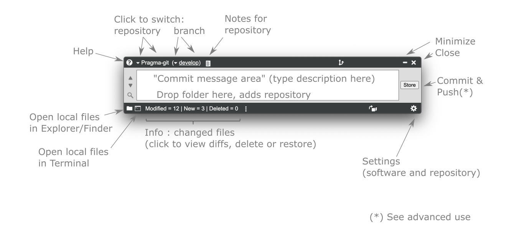
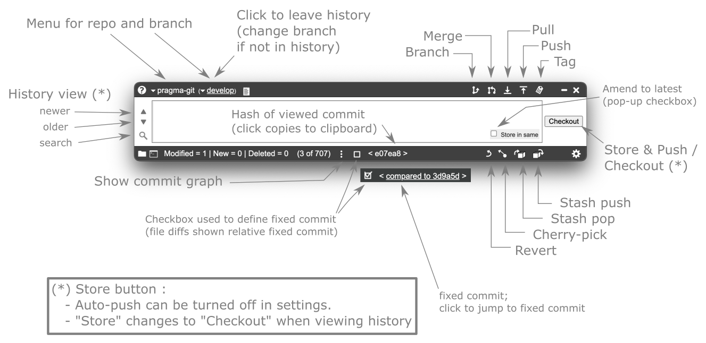
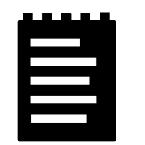

Pragma-git
About Pragma-git

Git started
Intro
Pragma-git aims to be a user-friendly revision control software. It fits people working on their own projects, in groups, or those who find git overwhelming.
The app uses "git" behind the scene, and is therefore fully compatible and can be used interchangeably with other git softwares. It requires set-up of git (see Installation).
Help
Help is found from the  icon.
This icon appears in most windows, giving help specific to that window.
icon.
This icon appears in most windows, giving help specific to that window.
Start working
- Drag and drop a project's folder onto the app's window.
- If the folder is not already prepared (as a git repository), please allow the program to initialize the folder for git.
Alternatively, if you want to work on a cloned project, cloning is performed from the settings menu.
Beginner's workflow (steps 1 - 4 in next section)
For git first-timers, the workflow would simply be:
- Work on your files
- When finished with some task: write a description in the text area, and press the button to store a snapshot of your files
- Work on your files
- When finished with some task: write a description in the text area, and press the button
- ...
The beauty of a revision control software is, that you may check out an old version later
Some git terminology
For git first-timers, the following definitions may be useful to know:
- You work on a project in a folder
- That folder can be made into a repository (which tracks different versions of the files)
In pragma-git, just drop the folder on the program window to make it a repository. - A revision (sometimes called a commit) is a snapshot in time, which you may go back to, or inspect.
- A revision is created by making a commit ( button), adding a descriptive message (such as "Fixed bug xyz")
- Files that are commited are safe, and the project folder can always be recovered to the state of that point in time
- A branch is simply a way to organize your work, so that work is grouped together in a logical fashion (by state of the code, by subproject, etc).
- It is considered good practice to have at least two branches, where for instance working code is stored in the "main" branch, and code being worked on is stored in another branch (for instance "develop")
- Switching (changing) branch modifies the files in the project folder to the latest revision within that branch
- Changes in files from one branch (for instance "develop") can be merged into another branch, for instance the "main" branch
- A repository can also have a remote counterpart. This can be used as a cloud backup (for instance on github.com) Other use cases includes to keep folders on multiple computers in sync, or as a means to collaborate between more than one developer
- If a remote repository has chaged, the changes may be pulled to the project folder of the local computer (and changes merged with the local files)
- If the same place in a file has been changed in different ways (local/remote, or when merging two local branches), this is called a conflict
- A conflict is resolved by the user telling the software which of the two versions to keep
- Pragma-git helps with all above, and also supports a number of more git operations
Extensive git dictionary
Click below, to view a more extensive dictionary of terms used in git, and also how they can be understood in Pragma-git
Here follows a number of concepts that can be described in many ways, both as "git" words, and more generally as concepts for revision control :
| Word | Meaning |
|---|---|
| Git | The de facto standard for software revision control |
| Snapshot | A version of all your project files, freezed to exactly this state forever |
| Project folder | A location for storing the files. See "Repository" below |
| Repository | A location for storing the files. See "Project folder" above |
| Local repository | A folder on your computer which has been assigned for version control. In Pragma-git, you drop the folder onto the main window. |
| Remote repository | A location normally on another computer. Git can send data to (push) and retrieve data from (pull) the remote repository |
| Initialize | A project folder has to be initialized to become a git repository. This places a hidden folder ".git" in your project folder, which keeps track of all revisions. Do not delete this folder!! |
| Clone | This means making a copy of a remote repository on your local computer. You can then work with this, as your own. One good use case, is if you work on more than one computer. Then, you can clone from a remote repository to your second computer, to get a copy of your complete remote repository. Cloning is only done once, after that you work with Commit, Push, Pull operations, or in Pragma-git, with the "Store"-button and Pull. |
| Commit | The "git" word for storing a snaphshot of your work, with a descriptive name. |
| Add, Commit | In git, storing a snapshot is a two step procedure: 1) select files and 2) commit the files, see above. The button in Pragma-git does this. This mode, not auto-pushing, is configured in the settings menu of Pragma-git. |
| Add, Commit, Push | The "git" way to store a snapshot in your local repository, and to send a copy to a remote repository. The button in Pragma-git does this. See "Store" below |
| Store | The "Pragma-git" way to (with one click) store a snapshot of the files at this time-point in a repository, and to send a copy to the remote repository. This mode, auto-pushing, is default in Pragma-git, and is configured in the settings menu of Pragma-git. |
| Branch | You may work on several versions of your project simultaneously, keeping track of them in different branches. For instance, performing something that is experimental, or implementing something which is a side-track from your project can be done in a separate branch. You can create a new branch from where you are, or from a historical snapshot (see section "Log, History", below). You cannot create a new branch if you have changed files that are not stored. If this side-track is successful you may wish to incorporate that into the main project -- see "merge", below. |
| Merge | Incorporating changes from one branch into another branch. Git does this very cleverly, so that changes that do not overlap will be combined from both branches. If you are unlucky, the same line of text has been changed differently in both branches. Then, git needs your help to resolve which version you wish to keep -- called to resolve a merge conflict |
| Conflict | See above. A conflict can occur when merging two snapshots from for instance two branches, but also between a remote and a local repository. There are two different types of conflicts: 1) a file was deleted in one of the two places, and 2) a file was changed in the same place on both places. For both this cases, git needs your help to decide on what you wish to do. This process is called "resolving a conflict", and in Pragma-git there is a tool that aids you in doing this |
| Pull | Retrieving the latest snapshot from the remote repository, and merging that with your local project folder. If you work on multiple computers, or are many people in the team, some work may have been performed and stored on the remote repository. "Pull" is a way to update your local project folder to the latest state. It is good practice to do this before you start working on your local project. |
| Push | Send a copy of your snapshots to the remote repository. In Pragma-git, the default is to do a "push" when pressing the button. This may be turned off in the settings, and then you need to do a manual push when ready to copy to the remote repository. In Pragma-git, you send the data to a remote branch with the same name as your local branch. |
| Stash | Like a clipboard copy, where you can "cut" (and remember) the file changes since the last stored snapshot. A stash takes you back to a clean last-snapshot, and keeps the changes in memory. Sometimes this can be useful. One such occasion is if you forgot to "pull" from the remote repository, before starting to work in your local folder. Doing a "stash", then "pull", and then "stash-pop" would be a workflow to solve such problem. In Pragma-git "stash" works as the computer clipboard's copy command, and can hold only one stash. |
| Stash-pop | Like a clipboard "paste", where you retrieve the stashed (see above) changed files. In Pragma-git "stash" works as the computer clipboard's cut and paste command, and can hold only one stash at a time |
| Log, History | The log (History) shows all stored snapshots. In Pragma-git, you walk down in history with the arrow buttons. You can set your project folder to any snapshot from the history, by doing a "checkout" |
| Checkout | This command sets your project folder to the state it was in at the point in time of the snapshot. You may play with the project in that state, but should be careful not to make any changes. |
| Detached HEAD | A checkout of a snapshot is in a state called "detached HEAD". That means that it does not belong to any branch, and if you make changes, they will be dangling without being easy to retrieve. Pragma-git advice you if this happens. The best way is to create a new branch from the checkout and work from there, and end your work by merging it to another branch. |
| Tag | An alias for a commit. This is often used for version numbering of softwares, but can be used for anything. You may view it as a sort of permanent bookmark |
The basic use

Title (top) and status bar (bottom)
 (the top title bar)
(the top title bar)
displays the name of your current repository (in this example "MyFolder"), and the name of the current branch (in this case "master"). In case you have more than one repository or branch,
the arrow next to the name can be clicked to select another repository or branch. Clicking on name will change into the next repository and branch.
 (the bottom status bar)
(the bottom status bar)
shows the number of modified files. In normal mode, it is the difference since the last Store operation. In history mode, it is the change from the previous revision in history.
Clicking on this area opens a list of modified files in a new window.
In this new window, you can see if a file was added, modified or deleted. In the normal mode (before the "Store"-button is pressed) you can delete or restore a modified file.
You may also investigate how the files were changed clicking the "diff" link, which works both in normal mode, and when viewing historical revisions.
 (the bottom status bar)
(the bottom status bar)
can show up instead of above status of changed files.
This may happen under special circumstances after a "merge", "pull" or "stash retrieve" action.
What it means is that Pragma-git needs your help to clarify what is your intention with files that have been changed in different ways in two different revisions.
Click on this text to open a "conflict resolution window", that guides you through this process.
The Store button
Stores the current state of your work as a revision. Learn more.
Advanced use

Title bar / top icons (click icon for explanation):
 notes,
Status bar / lower icons (click icon for explanation):
History browsing / left icons (click icon for explanation):
The Checkout button
Check out an older revison (shown when browsing history with the
 ,
,  buttons; see advanced use)
buttons; see advanced use)
Learn more
Store version with short description
When you feel you have reached an important point in your work (or are just afraid you will get lost if you continue) you may store a named revision of the project. The nice thing about the revision control system is, that you can later retrieve your whole project as it was at this point in time. There is no harm to store revisions often.
To store a revision of the changed files, you click in the text field, and type a descriptive text. The button becomes active when you start typing. Press this button to store your revision.
Store version with longer description
The description may be more than one line. If you use multiple lines,
the first line is a brief description (like a title). The next line is an empty line.
The following lines contain a more specific description. Example :
My message title
my long description that goes on and on ....
Project Notes
You may write personal notes for each repository. The notes are accessed by clicking the icon, in the top titlebar.
The notes are written using the built-in editor, which support both visual editing and editing with "markdown" rich text format. At the bottom of the editor, you can chose to change between editing in WYSIWYG (what-you-see-is-what-you-get), or Markdown.
The notes-file is stored in your home folder's .Pragma-git/Notes directory.
Files are auto-saved every 30 seconds, and when you close the window.
Advanced
Multiple repositories and branches
Repositories : You can have multiple active project folders (repositories), added by drag-and drop as described above. You switch by clicking the name (the first text in the title bar), to change to next project in the list.
Repositories can be created by cloning from an existing remote repository (see Instructions section, at the settings page).
Repositories can also be removed from the list in the program, also that from the settings window.
Branches : You can have multiple branches of your work, that you can switch between. You switch by clicking the name (the second text in the title bar between parentheses), to change to next project in the list.
Branches can be created from the Settings dialog icon  ,
where a new branch can be created from the top of your current branch, or from a checked-out historical commit.
,
where a new branch can be created from the top of your current branch, or from a checked-out historical commit.
Branching can also be performed with the  button (which is available if all working files are stored).
With this button, a branch may be created starting from the commit displayed in the main window (the latest Store, or a historical commit)
button (which is available if all working files are stored).
With this button, a branch may be created starting from the commit displayed in the main window (the latest Store, or a historical commit)
History, and checkout
Browsing history : As described above, the arrow buttons
(
 )
let you browse back in time.
Also, a graphical representation can be viewed by clicking the icon
)
let you browse back in time.
Also, a graphical representation can be viewed by clicking the icon
When you view an old commit, the button is changed into a button Pressing "Checkout" sets the files in the project to the same state as it was once, when Stored. This is useful if you wish to test your work as it was at this time point. If you don't modify any of the files, you are fine to change branch, and you will be back to where your project was before.
Peculiarity with git : If you change any of the files in a historical checkout, your files will be in a strange state called "detached HEAD"
Detached HEAD branch : The branch-name in the title bar is changed to "HEAD", which in git language is referred to as a "detached HEAD". That means, that once you move to another branch, the detached branch can't be easily found again.
Modified files in HEAD branch : If you have modified any files after this checkout and want to keep your changes, you need to move those changes to another branch.
Not Stored files : The easiest way to move modified (which are not Stored) files from a detached HEAD is :
- Press the stash button

- Click on the branch name (HEAD), until you are at the branch where you wish to add your changes to
- Press the retrieve stash button

Stored files : If you have modified and Stored files originating from a checked-out historical commit (what git calls "from a detached HEAD") :
- Click on the branch name (HEAD)
- A dialog pops up, and asks if you wish to
1) Create a temporary branch, to save the files, or
2) Delete your changes - If you select to 1) create a temporary branch, you will be asked to give a name for the new branch.
- Change branch to where you wish the new work to be added, and
then click the merge button

History - comparing with fixed commit
When in history mode, either by clicking down arrow, or search, the difference in the status bar is shown relative previous commit.
Enabling the checkbox

 sets the current commit as the reference, and when moving in history the differences are relative this commit.
sets the current commit as the reference, and when moving in history the differences are relative this commit.
The difference is always shown as a comparison between the newest to the oldest commit, regardless if the current commit is newer or older than the fixed commit. This eliminates the problem that the same file can be marked as new or deleted in a comparison between two commits, depending on which of the two commits was fixed.
Installation
Git : The code relies on a standard installation of git (download link).
Setup :
Your name and email should also be added, which you do from the "Software section" on the
settings page  .
.
Diff and Merge tool : Pragma-git contains its own diff and merge tool. If you have your favorite Diff and Merge tool it may be used instead. The tool is added to Pragma-git in the settings window.
Credits
- This program could not have been written without the following libraries
- - NW.js
- - Simple-git
- - CodeMirror editor
- - Toast-ui editor